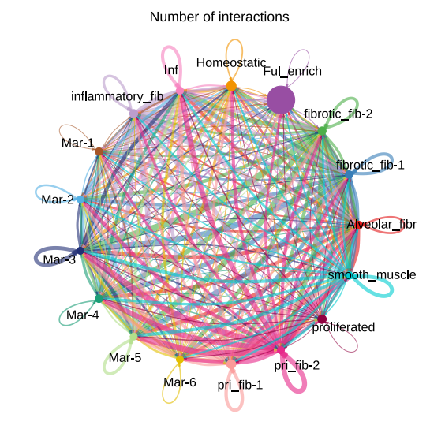
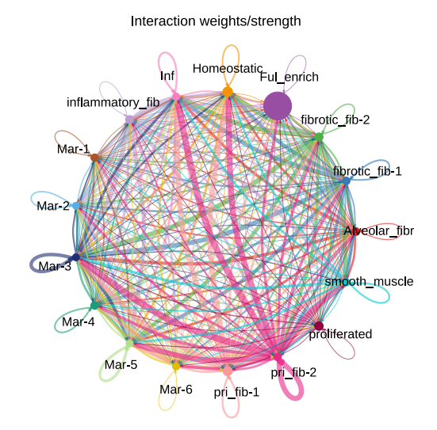
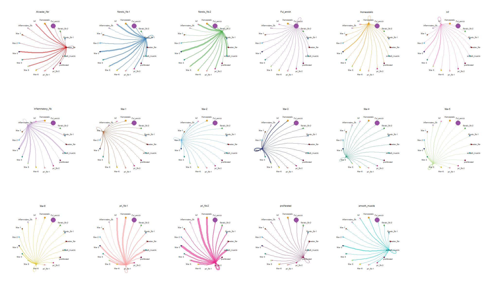

细胞通讯一搬有以下几个工具可以选择
- CellChatCellChat将细胞的基因表达数据作为输入，并结合配体受体及其辅助因子的相互作用来模拟细胞间通讯。（配体-受体+多聚体+辅因子）
- CellPhoneDBcellphonedb是公开的人工校正的，储存受体、配体以及两种相互作用的数据库。此外，还考虑了结构组成，能够描述异构复合物。（配体-受体+多聚体）
- NicheNet通过将相互作用细胞的表达数据与信号和基因调控网络的先验知识相结合来预测相互作用细胞之间的配体-靶标联系的方法。（配体-受体+信号通路）
还有一些其他工具比如iTALK，celltalker，singlecellsiGnalR，scTensor和基于MATLAB的SoptSC，这几个工具都是基于配体受体相互作用，但是还没有来得及尝试。 本篇主要记录一些cellchat的使用 CellChat通过综合信号配体、受体及其辅因子基因的表达只与它们之间互作的先验知识对细胞通讯概率建模。在推断出细胞间通讯网 络后，CellChat提供了进一步数据探索、分析和可视化的功能。
Jin, S., Guerrero-Juarez, C.F., Zhang, L. et al. Inference and analysis of cell-cell communication using CellChat. N at Commun 12, 1088 (2021). https://doi.org/10.1038/s41467-021-21246-9
这个包的绘图功能挺不友好的，需要注意检查输出文件，是否存在空白图像，特别是在服务器上运行的时候。且代码中我用来绘图的代码不是很聪明，肯定要很大的改良空间
1 单样本分析(不分组分析)
需要准备的依然只需要已经进行了细胞类型注释的RDS文件，以及需要清楚使用的物种. 使用的脚本参考了https://segmentfault.com/a/1190000044761294
library(Seurat)
library(CellChat)
library(dplyr)
library(patchwork)
library(ggplot2)
library(showtext)
## 读取数据 构建cellchat对象
data <- readRDS("../cc.RDS")
Idents(data) <- data$celltype
data$celltype <- Idents(data)
data$samples <- data$samplename
cellchat <- createCellChat(object = data, group.by="celltype",datatype = "RNA")
对cellchat对象进行分析
groupSize <- as.numeric(table(cellchat@idents))
groupSize
CellChatDB <- CellChatDB.mouse
showDatabaseCategory(CellChatDB)
glimpse(CellChatDB$interaction)
## 如果只想看特定的信号，可以这样
CellChatDB.use <- subsetDB(CellChatDB)# , search = "Secreted Signaling")
cellchat@DB <- CellChatDB.use
cellchat <- subsetData(cellchat)
cellchat <- identifyOverExpressedGenes(cellchat)
cellchat <- identifyOverExpressedInteractions(cellchat)
cellchat <- smoothData(cellchat, adj = PPI.mouse)
cellchat <- computeCommunProb(cellchat, raw.use = TRUE)
cellchat <- filterCommunication(cellchat, min.cells = 30)
cellchat <- computeCommunProbPathway(cellchat)
cellchat <- aggregateNet(cellchat)
saveRDS(cellchat, file = "cellchat_output.RDS")
这部分其实还是比较考验算力的如果有服务器可以将以上步骤放在服务器上运行
还是出于之前踩过的坑，在服务器上绘图会出现很多空的情况。所以我一般会把之前保存好的RDS文件放到windows本地进行绘图。
library(Seurat)
library(CellChat)
library(dplyr)
library(patchwork)
library(ggplot2)
library(showtext)
plan("multicore",workers=6)
options(future.globals.maxSize = 8 * 1024^3)
cellchat <- readRDS("cellchat_output.RDS")
groupSize <- as.numeric(table(cellchat@idents))
pdf("interaction_network.pdf")
par(xpd=T)
showtext_auto()
netVisual_circle(cellchat@net$count, vertex.weight = groupSize, weight.scale = T, label.edge= F, title.name = "Number of interactions")
netVisual_circle(cellchat@net$weight, vertex.weight = groupSize, weight.scale = T, label.edge= F, title.name = "Interaction weights/strength")
dev.off()
showtext_auto(FALSE)
png("interaction_network.png",width=2000,height = 1200,units = "px")
par(mfrow = c(1,2),xpd=T)
netVisual_circle(cellchat@net$count, vertex.weight = groupSize, weight.scale = T, label.edge= F, title.name = "Number of interactions")
netVisual_circle(cellchat@net$weight, vertex.weight = groupSize, weight.scale = T, label.edge= F, title.name = "Interaction weights/strength")
dev.off()
mat <- cellchat@net$weight
pdf("interaction_circle.pdf",width = 20,height = 12)
par(mfrow = c(1,2),xpd = T)
for (i in 1:nrow(mat)) {
mat2 <- matrix(0, nrow = nrow(mat), ncol = ncol(mat), dimnames = dimnames(mat))
mat2[i, ] <- mat[i, ]
plotname <- rownames(mat)[i]
netVisual_circle(mat2, vertex.weight = groupSize, weight.scale = T, edge.weight.max = max(mat), title.name = rownames(mat)[i])
}
dev.off()
png("interaction_circle.png",width=2000,height = 1200,units = "px")
par(mfrow=c(3,6),xpd = T)
for (i in 1:nrow(mat)) {
mat2 <- matrix(0, nrow = nrow(mat), ncol = ncol(mat), dimnames = dimnames(mat))
mat2[i, ] <- mat[i, ]
plotname <- rownames(mat)[i]
netVisual_circle(mat2, vertex.weight = groupSize, weight.scale = T, edge.weight.max = max(mat), title.name = rownames(mat)[i])
}
dev.off()
先看一下总览，每个圈代表一个细胞类型，全越大代表该细胞数量越多。每条连线的颜色代表了从哪个细胞类型发出，线条越粗代表该细胞类型与另一个细胞类型之间的互动次数越多。
 
分离每一个细胞类型

其余的请具体参考脚本文件cellchat.R
2 分组分析
其实就是把多个cellchat对象进行合并
cco.list <- list(pbmc=cco.pbmc, til=cco.til)
cellchat <- mergeCellChat(cco.list, add.names = names(cco.list), cell.prefix = TRUE)
这样就OK了其余的大差不差，网页可以参考这篇